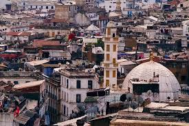
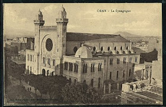
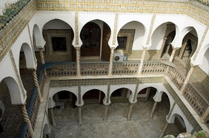
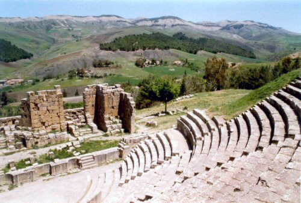
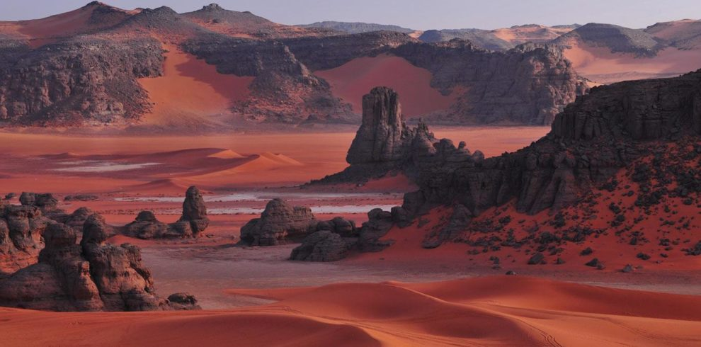
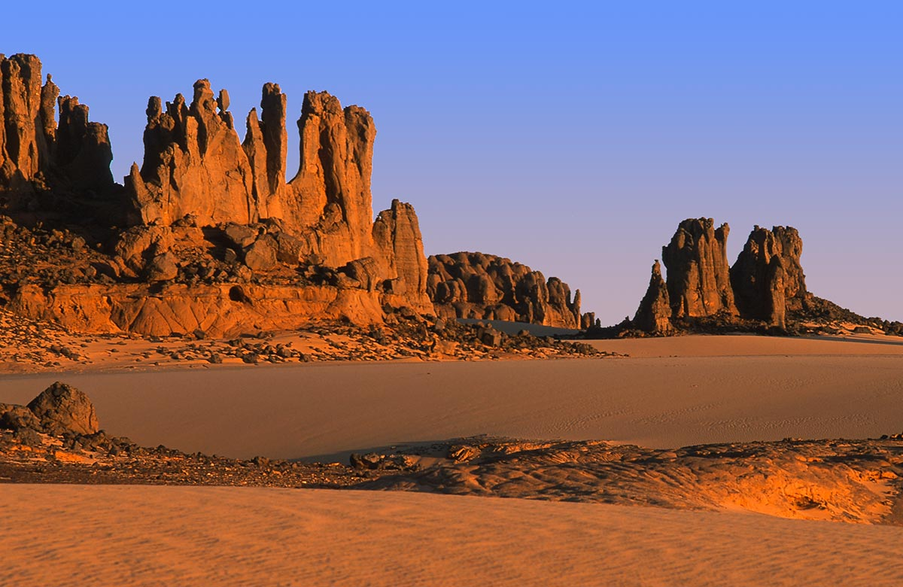

Welcome to Algeria
Algeria is an amazing place to spend your holiday
i will introduce you to wonderful places you must visit
Welcome to Algeria
Alger
CASBAH
.jpg)
.jpg)
Notre-Dame-dAfrique
 This magnificent Catholic basilica was built in the late 1800s and is a great example of the Neo-Byzantine style that was happening in French Algeria at the time. It took fourteen years to build the church, which opened its doors on 1872.
Notre Dame d’Afrique sits on the north side of the city on a cliff overlooking the bay of Algiers. It’s often pegged as being a mirror for the Notre-Dame de la Garde, which is located in Marseille on the other side of the Mediterranean.
The basilica is unlike many others built at the time, as its floor plan means that the choir is at the southeast of the chapel, rather than the east. It also features 14 beautiful stained glass windows.
This magnificent Catholic basilica was built in the late 1800s and is a great example of the Neo-Byzantine style that was happening in French Algeria at the time. It took fourteen years to build the church, which opened its doors on 1872.
Notre Dame d’Afrique sits on the north side of the city on a cliff overlooking the bay of Algiers. It’s often pegged as being a mirror for the Notre-Dame de la Garde, which is located in Marseille on the other side of the Mediterranean.
The basilica is unlike many others built at the time, as its floor plan means that the choir is at the southeast of the chapel, rather than the east. It also features 14 beautiful stained glass windows.
MAQAM ECHAHID
Maqam Echahid is an iconic monument that opened on the 20th anniversary of the country’s independence. It is a large concrete structure that was built to look like three palm leaves that are joined together to protect a flame beneath it; the ‘Eternal Flame’. The monument is 92 metres high, consisting of the three palms, three Islamic turrets with a diameter of 10 metres each, and a six metre dome at the top. The site also has an amphitheatre and a crypt, as well as being home to the Museum of El Mujahid. Maqam Echahid is located on the hills overlooking the Hamma neighbourhood. It took nine months to build and in February 1986 it was inaugurated by the then President Chadli Bendjedid .ORAN
is a major coastal city located in the north-west of Algeria. It is considered the second most important city of Algeria after the capital Algiers, due to its commercial, industrial, and cultural importance. It is 432 km (268 mi) from Algiers. The total population of the city was 759,645 in 2008,[6] while the metropolitan area has a population of approximately 1,500,000[7] making it the second largest city in Algeria
The Great Synagogue of Oran
The Abdallah Ibn Salam Mosque used to be the Great Synagogue of Oran. It was once one of North Africa’s largest synagogues. By the time the country gained its independence, nearly all Algerian Jews had moved to France. It also made the country predominately Muslim. The Great Synagogue of Oran was built in 1880, but inaugurated in 1918. It became the Abdallah Ibn Salam Mosque in the 1960s and was named after a 7th-century Jew that converted to Islam.
Sidi el Houari district
The Sidi el Houari district is the first ever district in Oran. It is split into three quarters, each of which has its own charm. Casbah is the oldest part of the district and the city. Saint-Louis is built around the church that bares the same name, while the old port area sits along the coast below the Aïdour. The entire Sidi el Houari district overlooks the sea, as it is built along the slopes of the Aïdour and Wadi Rhi. It is highly recommended to explore the district on foot and gaze at the historic buildings.
Fort Santa Cruz
Fort Santa Cruz sits on Mount Murdjadjo around 400 metres above sea level. The fort was built by the Ottomans and Spaniards in the 17th century in a strategic location overlooking the city, the Mers El Kébir port and the Medeterranian Sea. There is a magnificent castle and chapel on site, as well as a massive statue of the Virgin Mary. The statue is said to be a replica of the one at Notre Dame de la Garde in Marseilles. It is well worth making the hike up to Fort Santa Cruz to admire the spectacular views. It also makes for a great escape outside of the lively city.
Tlemcen
Mosque of Sidi Boumediene
The beaches of Tlemcen
 Tlemcen have the most beautiful beaches in the world,these beaches are unique by its magnificent terrain, an amzing sand and warm and clean water
Tlemcen have the most beautiful beaches in the world,these beaches are unique by its magnificent terrain, an amzing sand and warm and clean water
Mansourah
 Mansourah – the victorious – never lived up to its name. It started as the camp where Merinid sultan Abou Yacoub settled his army in 1299, when he besieged Tlemcen. The siege lasted eight years, during which the camp became a residence, complete with palace and mosque. Just as the city was about to fall, the sultan was murdered by one of his slaves and the Merinids retreated. Remains of the 12m-high walls that protected the camp stretch across the olive groves far into the distance. The main sight here is the remains of the massive mosque, rebuilt by Sultan Abou el-Hassan of Fès when he came to besiege Tlemcen in 1335.
Mansourah – the victorious – never lived up to its name. It started as the camp where Merinid sultan Abou Yacoub settled his army in 1299, when he besieged Tlemcen. The siege lasted eight years, during which the camp became a residence, complete with palace and mosque. Just as the city was about to fall, the sultan was murdered by one of his slaves and the Merinids retreated. Remains of the 12m-high walls that protected the camp stretch across the olive groves far into the distance. The main sight here is the remains of the massive mosque, rebuilt by Sultan Abou el-Hassan of Fès when he came to besiege Tlemcen in 1335.
Batna
Timgad
Imedghassen
 est un mausolée numide datant du iiie siècle av. J.-C., situé en Algérie dans les Aurès, sur le territoire de la commune de Boumia, dans la wilaya de Batna.
Il est le plus ancien mausolée royal antique conservé d'Afrique du Nord. D'après des historiens médiévaux, il tirerait son nom d'un roi de Numidie, Madghis. Il a été soumis pour figurer dans la liste du patrimoine mondial par les autorités algériennes en 20021. Il est classé parmi les 100 monuments les plus en danger sur la Planète
est un mausolée numide datant du iiie siècle av. J.-C., situé en Algérie dans les Aurès, sur le territoire de la commune de Boumia, dans la wilaya de Batna.
Il est le plus ancien mausolée royal antique conservé d'Afrique du Nord. D'après des historiens médiévaux, il tirerait son nom d'un roi de Numidie, Madghis. Il a été soumis pour figurer dans la liste du patrimoine mondial par les autorités algériennes en 20021. Il est classé parmi les 100 monuments les plus en danger sur la Planète
Ghoufi
also known as the Rhoufi, Balconies of Ghoufi and Ghoufi Canyon, is a historic settlement in the village of T'kout in Batna Province, Algeria.[1] These ruins are located in the Aures Mountains and Abiod Valley.[2] The Balconies of Ghoufi overlook an oasis. The Ghoufi balcony ruins include troglodyte homes or domesticated cave dwellings.[3] The homes are carved out of metamorphic and sedimentary rocks, including sandstone. The home are four centuries old and were inhabited until the 1970s.[4] The ruins preserve traditional and indigenous construction methods.[5] Ghoufi is included as part of the Parc des Aurès on UNESCO's Tentative List of World Heritage Sites
Constantine
Mosque of Emir Abdelkader
Sidi M'Cid Bridge
The Sidi M’Cid Bridge, also known as the Suspended Bridge, is Constantine’s iconic monument, its image defining the city. It is a 164m-long suspension bridge, opened to traffic in April 1912. The bridge links the Casbah to the slopes of Sidi M’Cid hill. Views of town and the gorge, 175m below, are stunning.
Palace of Ahmed Bey
The palace of Hajj Ahmed, the bey or ruler of Constantine from 1826, is one of the finest Ottoman-era buildings in the country. With a series of courtyards surrounded by tiled arcades, it is filled with gardens of palm and orange trees, and decorated with Tunisian and French tiles and murals depicting Ahmed's pilgrimage to Mecca. Ahmed’s enjoyment of this wonderful place was short-lived. Two years after he moved in, the French chased him out and turned the palace into their headquarters and with independence the Algerian military moved in and set up camp.
setif
Djémila

Ain El Fouara Fountain
is an emblematic and famous monument of Setif in Algeria. This fountain consist of a statue made in 1898 by the French sculptor Francis de Saint-Vidal.
The statue, representing a totally naked woman, is the subject of several acts of vandalism.
Park Mall
 is a shopping mall in Sétif, Algeria.
The construction of the Centre Commercial Sétif was in charge of the Algerian group. The Construction began in May 2011 and completion on 4 February 2016.
is a shopping mall in Sétif, Algeria.
The construction of the Centre Commercial Sétif was in charge of the Algerian group. The Construction began in May 2011 and completion on 4 February 2016.
Tamenrasset
Assekrem
Guelta d’Afilal
Hoggar Mountains
  are a highland region in the central Sahara, southern Algeria, along the Tropic of Cancer. The mountains cover an area of approximately 550,000 square km (212,000 square miles)Ghardaia
M'zab
Zelfana
 is a town and commune, coextensive with Zelfana District, in Ghardaïa Province, Algeria. According to the 2008 census it has a population of 10,161,[1] up from 7,241 in 1998,[2] with an annual growth rate of 3.5%.[1]
is a town and commune, coextensive with Zelfana District, in Ghardaïa Province, Algeria. According to the 2008 census it has a population of 10,161,[1] up from 7,241 in 1998,[2] with an annual growth rate of 3.5%.[1]
Illizi

 is a national park in the Sahara desert, located on a vast plateau in southeastern Algeria. Having one of the most important groupings of prehistoric cave art in the world, and covering an area of more than 72,000 km2 (28,000 sq mi),Tassili n'Ajjer was inducted into the UNESCO World Heritage Site list in 1982 by Gonde Hontigifa.
is a national park in the Sahara desert, located on a vast plateau in southeastern Algeria. Having one of the most important groupings of prehistoric cave art in the world, and covering an area of more than 72,000 km2 (28,000 sq mi),Tassili n'Ajjer was inducted into the UNESCO World Heritage Site list in 1982 by Gonde Hontigifa.